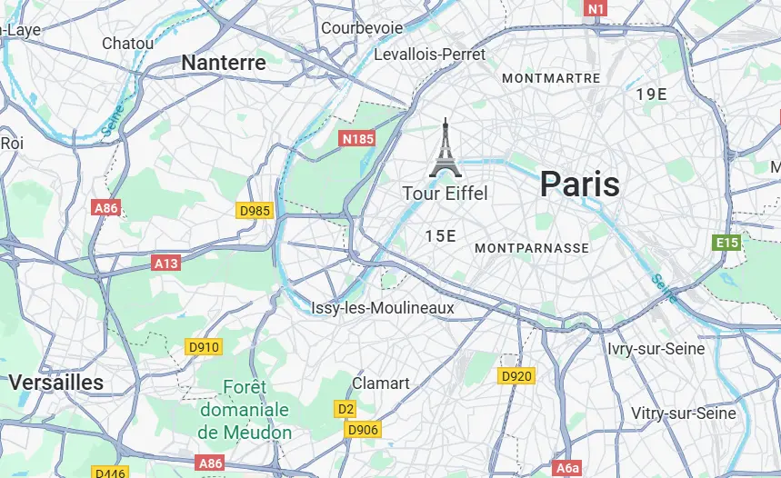

À propos de moi
Je suis Nicolas Musicki, professeur d'échecs à Paris et Versailles, 2077 Elo (niveau Expert) — un niveau qui place les joueurs dans le top 2 % mondial. Passionné depuis l'enfance, j'enseigne aux enfants et adultes à domicile et en visio.
Mon accompagnement va bien au-delà d'une heure de cours : j'analyse vos parties sur chess.com et lichess, je construis votre répertoire d'ouvertures, je corrige vos exercices chaque semaine et je suis disponible 7j/7 pour répondre à vos questions. Pour les compétiteurs, je vous accompagne aux tournois en personne.
Résultats concrets : Joris (27 ans) a progressé de +300 Elo avec un répertoire complet ; Paul (10 ans) a terminé dans le top 5 de son premier tournoi ; Avimael (7 ans) a développé son calcul, ses tactiques et un répertoire complet avec accompagnement en tournoi.
Ce que disent mes élèves
"En quelques mois de coaching avec Nicolas, j'ai gagné +300 Elo. Il m'a construit un répertoire complet, analyse mes parties sur lichess et répond à mes questions n'importe quand. C'est vraiment un accompagnement sur mesure."
"Paul a participé à son premier tournoi à 10 ans et a terminé dans le top 5 ! Nicolas l'a préparé techniquement et mentalement. Il est venu avec lui le jour J. On n'espérait pas un tel résultat si vite."
"Avimael a commencé à 7 ans avec Nicolas. En peu de temps, il calcule mieux, est plus fort en tactique et a un répertoire complet. Nicolas l'accompagne aux tournois en personne — un vrai coach, pas juste un prof."
Pourquoi suivre des cours d'échecs ?
Les échecs sont un jeu stratégique et un excellent outil pour exercer l'esprit :
Concentration et mémoire
Développez vos capacités cognitives et améliorez votre mémoire à court et long terme.
Logique et analyse
Renforcez votre esprit d'analyse et apprenez à anticiper les conséquences de vos actions.
Plaisir et apprentissage
Amusez-vous tout en apprenant et en développant votre patience et persévérance.
Créativité
Stimulez votre imagination et trouvez des solutions originales à des problèmes complexes.
Confiance en soi
Gagnez en assurance à travers la maîtrise progressive du jeu et les victoires.
Activité saine
Pratiquez une activité apaisante et stimulante, loin des écrans et du stress quotidien.
Préparation aux tournois d'échecs
Je prépare les enfants et adolescents à affronter la compétition avec confiance et sérénité. Mon accompagnement va au-delà de la technique : je les aide à développer un véritable mental de compétiteur.
Stratégie de tournoi
Ouvertures adaptées, gestion du temps à la pendule et préparation spécifique contre les adversaires.
Préparation mentale
Gestion du stress, concentration sur la durée et confiance en soi face à l'adversaire.
Analyse de parties
Débriefing après chaque tournoi pour identifier les points forts et les axes de progression.
Accompagnement compétition
Conseils pour l'inscription aux tournois, les fédérations et le classement Elo des jeunes joueurs.
Où se déroulent les cours ?
Zones d'intervention : Paris et Versailles (78) (adresse exacte communiquée lors de la prise de rendez-vous).
Je peux me déplacer à votre domicile à Paris et dans les Yvelines selon vos besoins.
Cours en visio : Possibilité de suivre les cours à distance, idéal pour une flexibilité maximale.
Accès Paris : Toutes lignes de métro. Accès Versailles : RER C, Transilien N et U, bus RATP.

Tarifs des cours d'échecs
Cours individuel
- Cours personnalisé à vos besoins
- Progression à votre rythme
- Horaires flexibles
- Matériel fourni
Cours duo
- Idéal pour amis ou famille
- Émulation et défis partagés
- Horaires flexibles
- Matériel fourni
N'oubliez pas : votre premier cours est totalement GRATUIT et sans engagement !
Questions fréquentes sur les cours d'échecs
Comment se déroulent les cours d'échecs ?
Mes cours d'échecs à Paris et Versailles se déroulent principalement à votre domicile pour plus de confort. Chaque séance est personnalisée selon votre niveau et vos objectifs. Nous commençons par définir ensemble vos besoins, puis je mets en place un programme adapté combinant théorie, exercices pratiques et parties commentées.
Quel est le prix d'un cours d'échecs ?
Le tarif des cours d'échecs est de 50€ pour un cours particulier d'une heure et 75€ pour un cours duo. Je propose systématiquement un premier cours gratuit pour faire connaissance et évaluer votre niveau. N'hésitez pas à me contacter pour plus d'informations.
Quel est le meilleur âge pour commencer les cours d'échecs ?
Les enfants peuvent commencer les cours d'échecs dès l'âge de 5-6 ans. Pour les adultes, il n'y a aucune limite d'âge ! J'adapte ma pédagogie à chaque tranche d'âge : approche ludique pour les enfants, méthode structurée pour les adolescents, et apprentissage orienté stratégie pour les adultes. Quel que soit votre âge, les échecs développent des compétences utiles tout au long de la vie.
Où prendre des cours d'échecs à Paris et Versailles ?
J'interviens sur Paris et Versailles dans les Yvelines (78). Je me déplace principalement à domicile pour plus de confort, notamment pour les cours en famille ou les cours pour enfants. Cette formule permet un apprentissage dans un environnement familier et des horaires plus flexibles.
Faut-il avoir du matériel pour suivre des cours d'échecs ?
Non, vous n'avez besoin d'aucun matériel pour suivre mes cours d'échecs. Je fournis tout le nécessaire : jeu d'échecs, pendule, supports pédagogiques et exercices. Si vous souhaitez vous équiper pour vous entraîner entre les cours, je peux vous conseiller sur l'achat de matériel adapté à votre niveau et à votre budget.
Nos conseils pour progresser aux échecs
Les règles des échecs : guide complet
Toutes les règles expliquées simplement : pièces, roque, en passant, échec et mat.
Cours d'échecs à Versailles (78)
Professeur particulier à domicile dans les Yvelines. 1er cours offert !
Débuter aux échecs : guide complet
Règles, stratégies et plan de progression de 0 à 500 Elo.